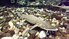

shovelnose-sturgeon

Has synonym(s): scaphirhynchus platorynchus
Definition: The shovelnose sturgeon (Scaphirhynchus platorynchus) is the smallest species of freshwater sturgeon native to North America. It is often called hackleback, sand sturgeon, or switchtail. Switchtail refers to the long filament found on the upper lobe of the caudal fin (often broken off as adults). Shovelnose sturgeon are the most abundant sturgeon found in the Missouri River and Mississippi River systems, and were formerly a commercially fished sturgeon in the United States of America (Pflieger 1997). In 2010, they were listed as threatened under the U.S. Endangered Species Act due to their resemblance to the endangered pallid sturgeon (S. albus), with which shovelnose sturgeon are sympatric.
Source: Wikipedia
Wikipedia Page (Something wrong with this association? Let us know.)
Wikidata Page (Something wrong with this association? Let us know.)